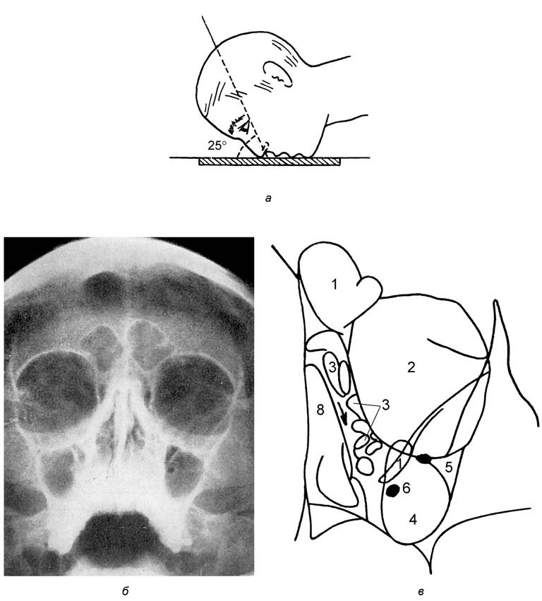
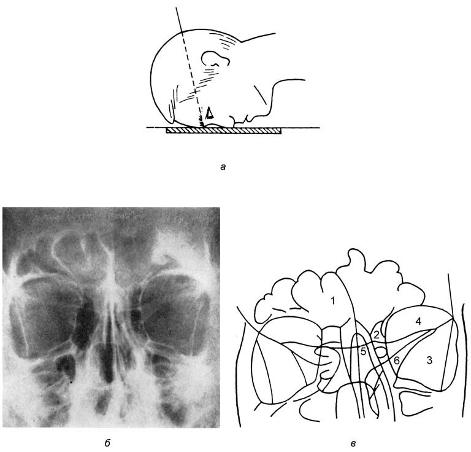

Методы исследования носа и околоносовых пазух
Жалобы и анамнез
Пациенту сначала дают описать жалобы своими словами, затем выясняют затруднение носового дыхания и выделения из носа. Важно определить, давно ли существует заложенность или она возникла недавно, например после травмы, односторонняя она, двусторонняя или попеременная, сезонная или круглогодичная. Выделения оценивают по характеру: водянистые, слизисто-гнойные или с примесью крови, которая может указывать на опухоль.
Для исключения аллергического ринита спрашивают о приступах чихания, зуде глаз, кашле и жалобах со стороны нижних дыхательных путей. При подозрении на аллергию собирают аллергологический анамнез: семейный и личный (бронхиальная астма, атопический дерматит, пищевая аллергия), условия жизни и работы с учётом домашних животных, комнатных растений и контакта с аллергенами на производстве, например в пекарне или парикмахерской. Головная боль может свидетельствовать о воспалении околоносовых пазух. Сухость слизистой оболочки возникает при простуде, изменении качества воздуха, после операций на носу и при длительном применении сосудосуживающих капель. О нарушении обоняния спрашивают всегда.
Осмотр и пальпация
Дыхание через рот позволяет заподозрить затруднение носового дыхания, а форма наружного носа иногда указывает на внутриносовые изменения, например на хрящевое искривление перегородки с её напряжением. Основание носа осматривают при запрокинутой голове; в этом положении проверяют и устойчивость крыльев носа, которые при слабости хрящей втягиваются даже при спокойном вдохе. Гиперемия и отёк век возникают при орбитальных осложнениях синусита, бабочкообразная эритема средней зоны лица характерна для рожи, ограниченные покраснение и припухлость в преддверии носа — для фурункула.
Пальпация нужна прежде всего для выявления нарушений целости кости. При подозрении на невралгию проверяют болезненность в области надглазничного, подглазничного и подбородочного отверстий. После травмы подвижность и крепитация наружного носа указывают на перелом пирамиды носа, а ступенчатая деформация края глазницы и костей средней зоны лица — на линию перелома. Отёк мягких тканей снижает точность исследования.
Передняя и задняя риноскопия
Ринологическое исследование начинают с передней риноскопии, при которой осматривают преддверие и передние отделы полости носа. Носовое зеркало держат левой рукой, опирая указательный палец на правое крыло носа, и вводят в закрытом виде; правой рукой поворачивают голову пациента и осторожно раскрывают бранши, не растягивая ноздрю чрезмерно. При слегка наклонённой вперёд голове видны дно полости носа, нижняя носовая раковина и передние отделы перегородки, при запрокинутой — ограниченно средний носовой ход и средняя носовая раковина. Эту область из-за анатомических особенностей часто невозможно оценить только передней риноскопией. Зеркало извлекают с немного раскрытыми браншами, чтобы не вырвать волоски.
Слизистую оболочку нередко предварительно обрабатывают сосудосуживающим средством, однако исходное её состояние тоже необходимо оценить, поэтому нос осматривают до и после анемизации. Передняя риноскопия служит и для малых вмешательств: передней тампонады при носовом кровотечении, удаления инородного тела, полипотомии. У детей используют детские носовые зеркала, у младенцев возможны ушные воронки, а растворы сосудосуживающих средств должны быть разведены. Задняя риноскопия, предназначавшаяся для осмотра носоглотки, хоан, задних концов носовых раковин и заднего края сошника, требует особого сотрудничества пациента и с развитием эндоскопии считается устаревшей.
Осмотр лицевых поверхностей и пальпация
Осмотр лицевых поверхностей пазушно-носовой системы направлен на выявление визуальных признаков заболевания в этой области (изменения кожи, некоторых двигательных и тонических функций мимической мускулатуры и мигательного рефлекса). Обращают внимание на общую конфигурацию лица, цвет и состояние кожных покровов (гиперемия, бледность, пастозность), симметричность лица, углов рта, глазных щелей. Оценивают внешний вид и положение пирамиды носа, вид и возможную причину ее деформации, которая может быть приобретенной (травма, сифилис) либо врожденной. Визуальная оценка общего выражения лица может выявить явные признаки неврологических дисфункций (асимметрия мимики, атония мимической мускулатуры, птоз или лагофтальм, слезотечение, провисание угла рта). по: Бабияк и соавт., т. 1, с. 88
Пальпация подразделяется на мануальную и инструментальную. Мануальная пальпация проводится для определения температуры кожи лица, подвижности мягких и костных тканей (например, фрагментов лицевого скелета при его переломах), консистенции тканей, по которой можно судить о размерах и направлении распространения патологического образования. При пальпации можно выявлять признаки флюктуации при абсцессах и кистах лицевой области либо симптом деревянистой плотности при флегмонах, а также болевые тригеминальные точки лица. Пальпируются также и регионарные лимфоузлы; устанавливают их участие в патологическом процессе путем оценки размера, количества, спаянности между собой и с окружающими тканями, консистенции, определяют наличие или отсутствие боли при их пальпации. по: Бабияк и соавт., т. 1, с. 90
Инструментальная пальпация относится к инвазивному методу исследования тканей, ее необходимо проводить с помощью стерильного металлического инструмента при соответствующей спиртовой обработке кожи (слизистые оболочки не обрабатывают). При зондировании кожных свищей, раневых каналов и других ходов применяют тонкие пуговчатые зонды разной длины, изогнутые по форме предполагаемого хода. Определяют глубину и разветвленность свищевого хода, состояние мягких и костных тканей (расплавление, эрозия), их подвижность. по: Бабияк и соавт., т. 1, с. 90
Общие правила осмотра ЛОР-органов
Источник света должен располагаться справа от обследуемого, на уровне его уха на расстоянии 15–20 см, несколько позади, чтобы свет от него не падал на обследуемую область. Отраженный от лобного рефлектора фокусированный свет должен освещать обследуемую область при нормальном положении врача, который не должен изгибаться и наклоняться в поиске «зайчика» или объекта осмотра; врач двигает голову больного, придавая ей необходимое положение. Начинающий оториноларинголог должен постоянно тренироваться для приобретения навыка бинокулярного зрения, необходимого при манипулировании в глубоких отделах ЛОР-органов. С этой целью он устанавливает световое пятно на объекте осмотра таким образом, чтобы при закрывании правого глаза оно было отчетливо видно через отверстие лобного рефлектора левым глазом. по: Бабияк и соавт., т. 1, с. 90–91
Инструменты, которые применяют при эндоскопии и различных манипуляциях, можно условно разделить на вспомогательные и «активные». Вспомогательные инструменты расширяют естественные ходы ЛОР-органов и устраняют некоторые препятствия; к ним относятся зеркала, воронки, шпатели. Активные инструменты служат для манипуляций, проводимых в полостях ЛОР-органов. Их необходимо держать в правой руке, что обеспечивает большую точность движений и не препятствует освещению осматриваемой полости; вспомогательные инструменты следует держать в левой руке. Идеальным же для ЛОР-врача является владение обеими руками. по: Бабияк и соавт., т. 1, с. 91
Позиции передней риноскопии и оцениваемые признаки
Перед проведением передней риноскопии при помощи носового зеркала целесообразно осмотреть преддверие носа, приподняв кончик носа. При передней риноскопии выделяют три позиции:
- нижнюю — осмотр нижних отделов перегородки и полости носа, нижних носовых раковин;
- среднюю — осмотр средних отделов перегородки и полости носа, средней носовой раковины;
- верхнюю — осмотр верхних отделов полости носа, его свода и области обонятельной щели.
по: Бабияк и соавт., т. 1, с. 91
При передней риноскопии оценивают следующие признаки:
- цвет слизистой оболочки и ее влажность;
- форму перегородки носа, сосудистую сеть в ее передних отделах, калибр сосудов;
- состояние носовых раковин (форма, цвет, объем, отношение к перегородке носа); их пальпируют пуговчатым зондом для определения консистенции;
- размеры и содержимое носовых ходов, особенно среднего и в области обонятельной щели. При наличии полипов, папиллом или других патологических тканей оценивают их внешний вид и при необходимости проводят забор ткани для биопсии.
по: Бабияк и соавт., т. 1, с. 91
Задняя риноскопия: помехи и приемы
С помощью задней риноскопии удается осмотреть задние отделы полости носа, свод носоглотки, ее боковые поверхности и носоглоточные отверстия слуховых труб. Шпателем, находящимся в левой руке, отдавливают передние две трети языка книзу и несколько вперед. Носоглоточное зеркало, предварительно подогретое во избежание запотевания его поверхности, вводят в носоглотку за мягкое небо, не касаясь корня языка и задней стенки глотки. по: Бабияк и соавт., т. 1, с. 91
Помехами исследованию являются выраженный рвотный рефлекс, толстый и «непокорный» язык, гипертрофированная язычная миндалина, узкий зев, длинный язычок мягкого неба, выступающие тела позвонков при выраженном лордозе шейного отдела позвоночника, воспалительные заболевания глотки, опухоли или рубцы мягкого неба. Если обычная задняя риноскопия не удается, применяют аппликационную анестезию, а также оттягивание мягкого неба с помощью одного или двух тонких резиновых катетеров: после анестезии слизистой оболочки носа, глотки и корня языка в каждую половину носа вводят катетер и выводят его конец с помощью корнцанга из глотки наружу; оба конца каждого катетера завязывают между собой с легким натяжением, следя за тем, чтобы мягкое небо и язычок не завернулись в сторону носоглотки. по: Бабияк и соавт., т. 1, с. 92
В носоглоточное зеркало (диаметр 8–15 мм) видны лишь отдельные участки осматриваемой области. Поэтому для обзора всех образований носоглотки совершают легкие повороты зеркала, последовательно осматривая всю полость и ее образования, ориентируясь на задний край перегородки носа. Задней риноскопии придают большое значение при наличии воспалительных заболеваний клиновидной пазухи, опухолевых процессов в ней, в параселлярных областях, в области турецкого седла, при оптико-хиазмальном арахноидите. по: Бабияк и соавт., т. 1, с. 92
Пальцевое исследование носоглотки
В некоторых случаях возникает необходимость пальцевого обследования носоглотки, особенно у детей, поскольку у них редко удается провести непрямую заднюю риноскопию. Врач становится позади сидящего больного, охватывает его голову и шею левой рукой, большим пальцем вдавливает в открытый рот левую часть щечной ткани (предотвращение укуса), а остальные пальцы и ладонь подводит под нижнюю челюсть и таким образом, фиксируя голову, обеспечивает доступ в полость рта. Указательный палец правой руки вводят по поверхности языка, слегка отжимая последний книзу, сгибают и заводят за небную занавеску и пальпируют им анатомические образования носоглотки. Эта процедура при соответствующем навыке длится 3–5 с. При пальцевом обследовании носоглотки оценивают общий ее размер и форму, определяют наличие или отсутствие частичной или полной ее облитерации, синехий, аденоидов, обструкции хоан, гипертрофированных задних концов нижних носовых раковин, полипов хоан, опухолевой ткани. по: Бабияк и соавт., т. 1, с. 92–93
Диафаноскопия
В 1889 г. Т. Геринг1 (Th. Heryng) впервые предложил способ светового просвечивания верхнечелюстных пазух путем введения в полость рта светящейся лампочки. Впоследствии конструкция диафаноскопа была многократно усовершенствована; современные диафаноскопы используют яркие галогеновые лампы и волоконную оптику. Методика диафаноскопии чрезвычайно проста, она абсолютно неинвазивна. Процедуру проводят в темной кабине со слабой подсветкой, желательно темно-зеленым светом, при котором происходит повышение чувствительности зрения к красной части светового спектра. После пятиминутной адаптации обследующего к этому свету приступают к просвечиванию околоносовых пазух, которое длится не более 2–3 мин. по: Бабияк и соавт., т. 1, с. 94
Для просвечивания верхнечелюстной пазухи диафаноскоп вводят в полость рта и пучок света направляют на твердое небо; обследуемый губами плотно фиксирует трубку диафаноскопа, чтобы свет из полости рта не проникал наружу. В норме на передней поверхности лица возникает ряд симметрично расположенных световых пятен красноватого цвета: два пятна в области собачьих ямок (между скуловой костью, крылом носа и верхней губой), которые свидетельствуют о хорошей воздушности верхнечелюстных пазух. Дополнительные световые пятна возникают в области нижнего края глазницы в виде полумесяца вогнутостью вверх (свидетельство нормального состояния верхней стенки верхнечелюстной пазухи). по: Бабияк и соавт., т. 1, с. 94–95
Для просвечивания лобной пазухи диафаноскоп с насадкой, фокусирующей свет в узкий пучок, прикладывают к верхнемедиальному углу орбиты так, чтобы свет не проникал в нее, а направлялся сквозь ее верхнемедиальную стенку в направлении центра лба. В норме при симметричной воздухоносности лобных пазух в области надбровных дуг появляются тусклые темно-красные пятна. Результаты диафаноскопии оценивают в комплексе с другими клиническими признаками, так как разница яркости между соответствующими пазухами (или даже полное отсутствие свечения на какой-либо стороне) может быть обусловлена не только патологическим процессом (отек слизистой, наличие экссудата, гноя, крови, опухоли), но и анатомическими особенностями. по: Бабияк и соавт., т. 1, с. 95
Эндоскопия полости носа и носоглотки
Эндоскопия стала важнейшим клиническим методом ринологической диагностики, но требует навыка, так как даёт лишь увеличенное изображение небольших участков. Применяют жёсткие эндоскопы диаметром 4 и 2,8 мм с углами обзора 0°, 30° и 120°, а также гибкие, которыми за одно исследование осматривают нос, носоглотку, глотку и гортань. Их недостатки — меньшая освещённость, худшее разрешение и необходимость работать двумя руками, тогда как жёсткий эндоскоп оставляет одну руку свободной для инструмента. Пациент сидит, слизистую оболочку анемизируют и обезболивают. Диагностическое исследование выполняют телескопом 4 мм с углом 30°, а эндоскоп 2,8 мм используют при очень узкой полости носа и у детей.
Сначала эндоскоп проводят в носоглотку и осматривают глоточное отверстие слуховой трубы, трубный валик, заднюю стенку глотки и свод носоглотки. Картина очень детальна, например для раннего выявления рака носоглотки, но её дополняют трансоральной эндоскопией. Эндоскопия особенно важна для оценки остиомеатального комплекса, недоступного передней риноскопии. Средний носовой ход осматривают, подведя эндоскоп к головке средней носовой раковины; дальше в комплекс ведёт узкий промежуток между крючковидным отростком и средней носовой раковиной, пройти который в норме можно только эндоскопом 2,8 мм, а эндоскопом 4 мм — после удаления крючковидного отростка. Клиновидную пазуху иногда осматривают тонким телескопом через естественное соустье, верхнечелюстную при необходимости исследуют через нижний носовой ход после перфорации латеральной стенки носа или трансфациальным доступом.

Оценка носового дыхания
Для ориентировочной оценки проходимости подставляют под нос металлическую пластинку и судят по запотеванию; у младенцев подносят к каждой ноздре прядь ваты. Наиболее стандартизованным методом является активная передняя риноманометрия, которая регистрирует разность давлений между преддверием носа и носоглоткой и объёмную скорость потока. Одну ноздрю закрывают, поток измеряют с противоположной стороны. Точность метода наименьшая при выраженной обструкции, а при полной непроходимости одной половины носа он неприменим; более пологая кривая указывает на сужение.
Акустическая ринометрия основана на акустическом отражении и определяет усреднённые площади поперечного сечения полости носа на разных уровнях. Метод быстрее и проще, не зависит от сотрудничества пациента и удобен у детей, но измеряет статические параметры и не оценивает проходимость воздушного потока.
Аллергологические пробы и ольфактометрия
Анамнез и эндоскопическая картина лишь предположительно указывают на аллергический ринит, поэтому для подтверждения проводят аллергологические тесты. Чаще всего выполняют прик-тест: кожу поверхностно прокалывают через стандартные аллергены и сравнивают реакцию с положительным (гистамин) и отрицательным (физиологический раствор) контролем. Положительный результат доказывает сенсибилизацию, но не аллергическую причину ринита. Определение общего IgE малоинформативно, поэтому предпочтительно определять специфические IgE. При назальном провокационном тесте раствор аллергена наносят на головку нижней носовой раковины, а риноманометрию проводят до и через 20 минут после нанесения; снижение проходимости подтверждает местное действие аллергена. Из-за риска тяжёлой реакции и анафилактического шока в кабинете должно быть оборудование для неотложной помощи.
Пациенты нередко принимают нарушение обоняния за нарушение вкуса, хотя изолированные расстройства вкуса очень редки, поэтому исследуют обе функции. Сначала передней риноскопией или эндоскопией исключают препятствия потоку воздуха к обонятельной щели. При субъективной ольфактометрии вещества подносят к каждой ноздре до и после анемизации: чистые одоранты (кофе, какао, ваниль, корица, лаванда), вещества с тройничным компонентом (ментол, уксусная кислота) и вещества с вкусовым компонентом. При аносмии чистые одоранты не воспринимаются, остальные ощущаются; если не воспринимаются раздражители тройничного нерва, следует думать о симуляции. Стандартные наборы вроде Sniffin' Sticks благодаря воспроизводимости вытесняют классические тесты. Объективная ольфактометрия по обонятельным вызванным потенциалам дорога и применяется в крупных центрах, главным образом при экспертизе.
Ультразвуковое исследование околоносовых пазух
Ультразвуковое исследование проводится в отношении верхнечелюстной и лобной пазух; с помощью этого метода можно установить факт наличия в пазухе воздуха (норма), жидкости, утолщения слизистой оболочки или плотного образования (опухоль, полип, киста и др.). Прибор, используемый для УЗ-исследования околоносовой пазухи, получил название «Синусскан». Принцип действия основан на облучении полости ультразвуком (300 кГц) и регистрации сигнала, отражённого от находящихся на пути луча образований. В основе метода лежит свойство ультразвука не проходить через воздушную среду, хорошо проникать через жидкие среды и отражаться от границ сред разной плотности. После аналого-цифровой обработки отражённого сигнала на дисплее отображаются пространственно разнесённые индикационные полосы, количество которых соответствует числу эхогенных слоёв, а расстояние от нулевой полосы (поверхность кожного покрова) отражает глубину залегания каждого слоя. по: Бабияк и соавт., т. 1, с. 96–97
Рентгенологическое исследование передних околоносовых пазух
Рентгенодиагностика заболеваний околоносовой пазухи направлена на достижение следующих целей: выявление степени воздухоносности полости носа и околоносовых пазух, определение состояния их костных стенок и мягких тканей, наличие или отсутствие инородных тел, выявление аномалий развития лицевого скелета и др. Для более эффективного выявления объёмных образований верхнечелюстной пазухи применяют рентгеноконтрастные вещества, вводимые в полость пазухи. Анатомо-топографические особенности околоносовых пазух требуют специальных укладок, при помощи которых визуализируются те или иные структуры. К передним околоносовым пазухам относятся лобные и верхнечелюстные пазухи, а также передние клетки решётчатого лабиринта. по: Бабияк и соавт., т. 1, с. 97
Носоподбородочная укладка (супраокципитоальвеолярная проекция) позволяет получать следующие данные:
- лобные пазухи обычно расположены симметрично, разделены костными перегородками, из которых одна расположена парамедиально; нормальное негативное рентгенологическое отображение их должно быть тёмно-серым, несколько светлее орбит, гомогенным в пределах чётко очерченных костных границ, отображаемых в виде белой непрерывной линии;
- орбиты слегка уплощены из-за соответствующей проекции, в нижнелатеральной части их видны тени крыльев клиновидной кости;
- ячейки решётчатого лабиринта и их костные перегородки проецируются между глазницами; задние ячейки при данной укладке как бы продолжают собою передние и визуализируются в направлении к верхнемедиальному углу верхнечелюстной пазухи;
- верхнечелюстные пазухи, расположенные в центре лицевого массива, наиболее симметричны по локализации и приблизительно одинаковы по форме и размеру; иногда внутри пазух имеются костные перегородки (полные и неполные), которые делят полость на две или более частей; большое значение имеет рентгенологическая визуализация её карманов (альвеолярного, нижненёбного, молярного и глазнично-решётчатого);
- нижнеглазничная щель, через которую выходят скуловой и нижнеглазничный нервы, проецируется под нижним краем орбиты; она имеет значение при проведении локально-региональной анестезии, а при её деформации — в возникновении невралгии соответствующих нервных стволов;
- круглое отверстие проецируется в среднемедиальной части плоскостного изображения верхнечелюстной пазухи (на рентгенограмме видно в виде округлой чёрной точки, окружённой плотными костными стенками) и всегда соседствует с изображением клиновидной щели.
по: Бабияк и соавт., т. 1, с. 97–98

Носолобная укладка (супраокципитофронтальная проекция) позволяет получить развёрнутое изображение лобных пазух, глазниц и ячеек решётчатого лабиринта. В этой проекции ячейки решётчатого лабиринта визуализируются более отчётливо, зато размеры и нижние отделы верхнечелюстной пазухи обозримы неполностью из-за того, что на них проецируются пирамиды височных костей. На изображение клеток решётчатого лабиринта наслаивается множество теней других анатомических образований черепа; отличительным их признаком является то, что их тени распространяются без перерыва за пределы клеток решётчатого лабиринта. Основное предназначение носолобной проекции — это получение развёрнутого изображения лобных пазух. по: Бабияк и соавт., т. 1, с. 99–100

Боковая укладка позволяет визуализировать лобную пазуху, её переднюю и заднюю стенки, возможно — и межпазушную перегородку; основание носа и носовые косточки; передние клетки решётчатого лабиринта; наружный край орбиты; верхнечелюстную пазуху и её стенки в сагиттальном сечении; твёрдое нёбо и альвеолярную дугу с молярами; лобный отросток скуловой кости; среднюю часть решётчатой кости, свод орбиты, решётчатую пластинку; шиловидный отросток; переднюю дугу атланта. Контуры визуализируемых образований часто представляются в виде двойных линий из-за суперпозиции обеих половин скелета лица. Клиновидная пазуха проецируется под турецким седлом. Боковая проекция важна для оценки формы и размера лобной пазухи в переднезаднем направлении (например, при необходимости её трепанопункции), определения её отношения к орбите, формы и размера клиновидной и верхнечелюстной пазух, а также многих других анатомических образований лицевого скелета и передних отделов основания черепа. по: Бабияк и соавт., т. 1, с. 100

Рентгенологическое исследование задних околоносовых пазух
К задним околоносовым пазухам относятся клиновидные пазухи; некоторые авторы топографически к ним причисляют и задние ячейки решётчатой кости. Аксиальная проекция (вертексосубментальная) выявляет множество образований основания черепа; применяется при необходимости визуализировать основные пазухи, скалистую часть височной кости, отверстия основания черепа и другие элементы. Эта проекция показана при переломах основания черепа. В указанной проекции визуализируются лобные и верхнечелюстные пазухи; латеральные стенки последних и орбиты; тело скуловой кости; задний край малого крыла клиновидной кости; клетки решётчатой кости, расположенные по средней линии, иногда прикрытые гипертрофированными средними носовыми раковинами. по: Бабияк и соавт., т. 1, с. 100
Клиновидные пазухи отличаются значительным разнообразием своего строения; даже у одного и того же лица они могут быть различными по объёму и асимметричными по расположению. По рентгенологическому изображению они могут быть от очень маленьких до чрезмерно больших и распространяться в окружающие их части клиновидной кости (большие крылья, крыловидные и базилярные апофизы). Кроме того, в данной проекции визуализируются некоторые отверстия основания черепа (овальное, круглое, переднее и заднее рваные отверстия), через которые при травмах черепа нередко проходит линия перелома. Обозримы тени части пирамиды височной кости и её вершины, ветви нижней челюсти, апофиз основания затылочной кости, атлант и большое затылочное отверстие, в котором видна тень зубовидного отростка II шейного позвонка. по: Бабияк и соавт., т. 1, с. 100
![Рис. 4.9. Аксиальная проекция (по Pană I., 1973): а — рентгенограмма; б — схема визуализированных элементов: 1 — лобные пазухи, 2 — верхнечелюстные пазухи, 3 — латеральная стенка верхнечелюстной пазухи, 4 — латеральная стенка глазницы, 5 — клиновидные пазухи, 6 — овальное отверстие, 7 — круглое отверстие, 8 — пирамида височной кости, 9, 10 — переднее и заднее рваные отверстия, 11 — апофиз основания затылочной кости, 12 — первый шейный позвонок, 13 — апофиз зубовидного отростка II шейного позвонка, 14 — нижняя челюсть, 15 — клетки решётчатой кости, 16 (стрелка) — вершина пирамиды височной кости](img/tb-nosm-aks.jpg)
Исследование обоняния: анамнез и методики
Исследованию функции обоняния придают большое значение как весьма эффективному методу диагностики заболеваний пазушно-носовой системы и ЦНС. Многие из так называемых эссенциальных аносмий или паросмий могут быть связаны с органическими заболеваниями внутричерепных структур, прямо или косвенно относящихся к обонятельным центрам и их проводникам. Нередко нарушения обоняния, чаще всего односторонние (например, объективная гипосмия или обонятельные галлюцинации), могут проявляться в числе наиболее ранних симптомов внутричерепного заболевания. по: Бабияк и соавт., т. 1, с. 112
Опрос больного проводится по общепринятой схеме. Выясняют признаки изменения обоняния: понижение, отсутствие, обострённое восприятие; не вызывают ли запахи каких-либо ассоциаций или паросмий (запах определённого вещества воспринимается как запах другого или незнакомого вещества); не вызывают ли определённые запахи бронхоспазма, сердцебиения или вегетативных реакций. Уточняют сроки появления нарушений обоняния, их периодичность или непрерывность, динамику, возможную причину; предшествовавшие заболевания (травмы, острые нарушения мозгового кровообращения, инфекционные заболевания, отравления), а также профессиональные вредности (пары агрессивных и токсических жидкостей, аэрозоли, задымлённость и запылённость помещения). по: Бабияк и соавт., т. 1, с. 112
Все способы исследования обоняния делятся на субъективные, косвенно-объективные и объективные. В повседневной клинической практике применяются в основном субъективные, основанные на предъявлении обследуемому тестирующего вещества и его словесном отчёте. Косвенно-объективные методы основаны на регистрации обонятельно-вегетативных реакций: изменений частоты сердечных сокращений, фаз дыхательного цикла, частоты дыхания, ольфактопупиллярных рефлексов, кожно-гальванической реакции. Объективные методы основаны на регистрации электрокортикограммы и электроэнцефалограммы; они имеют определённую ценность в комплексном обследовании больных с объёмными процессами в теменно-затылочно-височной области. по: Бабияк и соавт., т. 1, с. 112–113
Качественное исследование проводят при экспозиции пахучего вещества в непосредственной близости к одной, а затем — к другой ноздре: больному предлагают активно принюхаться и ответить, чувствует ли он какой-либо запах и, если чувствует, то какой. Набор В. Бернштейна (1929) состоит из 8 пахучих веществ от самого слабого до самого сильного: хозяйственное мыло, розовая вода, горькоминдальная вода, дёготь, скипидар (действуют в основном на обонятельный нерв), нашатырный спирт, уксусная кислота (действуют на обонятельный и тройничный нервы), хлороформ (действует на обонятельный и языкоглоточный нервы). Если полностью выключен обонятельный нерв, больной всё же будет ощущать «запахи», действующие на V и IX нервы, но в значительно ослабленном и искажённом виде. по: Бабияк и соавт., т. 1, с. 113–114
Широкое распространение получил одориметрический паспорт В. И. Воячека. В первоначальном варианте набор состоял из 4 нарастающих по силе пахучих веществ; позднее к нему были добавлены бензин (для лиц, не знакомых с запахом валерианы) и дистиллированная вода (контроль). Бензин как наиболее летучее и «проникающее» вещество размещён под № 6: при отсутствии его восприятия функцию обоняния следует считать полностью выключенной. по: Бабияк и соавт., т. 1, с. 114
Таблица 1. Одориметрический паспорт В. И. Воячека
| № | Пахучее вещество | Сила запаха |
|---|---|---|
| 1 | 0,5% раствор уксусной кислоты | слабый |
| 2 | этиловый спирт | средней силы |
| 3 | настойка валерианы | сильный |
| 4 | нашатырный спирт | сверхсильный |
| 5 | дистиллированная вода | контроль |
| 6 | бензин | наиболее летучий и проникающий |
Правильное выполнение исследования предусматривает исключение попадания паров пахучего вещества в необследуемую половину носа и оценку запаха на вдохе с задержкой дыхания. Кусочек фильтровальной бумаги 0,5–1,0 см, смоченный в растворе пахучего вещества, подносят к одной ноздре, закрыв другую, и просят больного сделать лёгкий вдох носом, задержать на 3–4 с дыхание и определить запах. Результаты оценивают по 5-степенной системе:
- I степень — обследуемый идентифицирует самый слабый запах — № 1;
- II степень — воспринимаются запахи под № 2, 3, 4, 6;
- III степень — воспринимаются запахи под № 3, 4, 6;
- IV степень — воспринимаются запахи под № 4, 6;
- V степень — воспринимается только запах под № 6.
по: Бабияк и соавт., т. 1, с. 114
Если ни один из запахов не воспринимается, устанавливают диагноз аносмии. При гипосмии исключают её механическую причину: тщательно осматривают верхние отделы полости носа и при необходимости однократно смазывают слизистую оболочку раствором адреналина 1 : 1000 (но не анестетиком) и через 5 мин проводят повторное обследование. Появление или улучшение обоняния после этой процедуры указывает на наличие «механической» гипосмии. по: Бабияк и соавт., т. 1, с. 114–115
Количественное исследование обонятельной функции предусматривает определение порога восприятия и порога распознавания с помощью пахучих веществ ольфактивного, тригеминального и смешанного действия. Метод получил название ольфактометрии; классическими устройствами служат ольфактометры Цваардемакера и Элсберга — Леви. В ольфактометре Цваардемакера (конец XIX в.) количество пахучего вещества, попадающее в заборную трубку, зависит от её положения внутри цилиндра из пахучего вещества; недостатком метода является неконтролируемый активный вдох. Этого недостатка лишён «импульсный» (инжекторный) метод Элсберга — Леви (1935), при котором воздух, вводимый шприцем в колбу с раствором пахучего вещества, вытесняет его пары через оливы в нос. Количественное исследование может быть проведено и простым способом — с помощью фильтровальной бумаги и возрастающей концентрации одного вещества или шприца, которым в полость носа вводят по 1, 2, 3 и более мл воздуха, насыщенного парами пахучего вещества, до появления ощущения запаха. по: Бабияк и соавт., т. 1, с. 115
Лучевые методы
Рентгенография околоносовых пазух в носоподбородочной и носолобной проекциях остаётся рутинной при остром воспалении и переломах средней зоны лица, но наложение структур снижает её ценность, а после операций рубцовая ткань может имитировать затемнение. Клиновидную пазуху в носоподбородочной проекции оценить трудно, при подозрении на её поражение добавляют боковой снимок. Основные показания к КТ околоносовых пазух — хронический синусит, травма, особенно переломы основания черепа, и опухоли. Исследование выполняют преимущественно в корональной плоскости, аксиальные срезы добавляют при особых задачах, сагиттальные реконструкции уступают по качеству. Спиральная КТ занимает около 20 секунд, поэтому артефакты движения менее выражены; металлические зубные протезы ухудшают изображение. В норме воздухоносные пазухи на снимках чёрные, неизменённая слизистая оболочка не видна, костные стенки гиперденсивны.
МРТ уступает КТ в оценке костных границ, но превосходит её в различении мягких тканей, поэтому показана при распространении процесса на полость черепа или глазницу, например при опухолях и энцефалоцеле, для дифференциации мукоцеле, кисты и полипа и для отличия опухоли от перифокальной воспалительной реакции. Она противопоказана при большинстве электронных имплантатов, включая кардиостимулятор и кохлеарный имплант, тогда как титановые фиксаторы обычно немагнитны. Ультразвуковое исследование доступно для лобных и верхнечелюстных пазух и удобно для наблюдения за острым воспалением, у детей и беременных; клиновидная пазуха для него недоступна, а изображение менее детально, чем при КТ и МРТ.
Примечания
1Heryng Teodor (1847–1925) — известный польский оториноларинголог. (по: Бабияк и соавт., т. 1, с. 337)
Источники
- Probst R., Grevers G., Iro H. Basic Otorhinolaryngology: A Step-by-Step Learning Guide. — Stuttgart: Thieme. — P. 16–25.
- Бабияк В. И., Накатис Я. А., Говорун М. И. Оториноларингология. Руководство. Т. 1. — СПб.: Питер, 2009. — Гл. 4 «Методы исследования пазушно-носовой анатомо-функциональной системы и органа обоняния»: с. 88–100 (в том числе ультразвуковое и рентгенологическое исследование пазух, рис. 4.6–4.9), 112–115 (методы исследования органа обоняния).
Раздел «Учебник» — справочная теория, не клинические рекомендации. Тактика ведения пациента — по разборам КР.